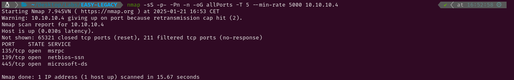

EASY - LEGACY
1. Recon
Nmap
nmap finds three open ports: msrpc (135), NetBios (139) and Microsoft-ds (445).

The NSE (Nmap Scripting Engine) finds the following information:
- The box is using Windows XP
- The target is vulnerable to MS17-010
- The target is vulnerable to MS08-067

2. Gaining Access
As I know the system is vulnerable to two exploits that grant Remote Code Execution, I will use both of them.
MS-17-010
To exploit this vulnerability, as I did in Blue, I will use this GitHub repository. The send_and_execute.py file lets me send and execute a .exe to the target so I just have to generate a reverse shell with msfvenom and send it. After doing it, a shell with Adminsitrator permissions will spawn in my netcat listener.


MS-08-067
To exploit this vulnerability I will use a script from Jivoi . This script needs to be modified with a shellcode which can be generated with msfvenom.

This script needs three parameters to run succesfully. The first one is the IP address of the vulnerable system. The second one is the OS number (check the list below). As I know the target is using Windows XP I will try with the number 6. And the third parameter is the port where SMB is running on. After running the script, a shell spawns in my netcat listener and, as I have Administrator permissions, I can grab both flags.